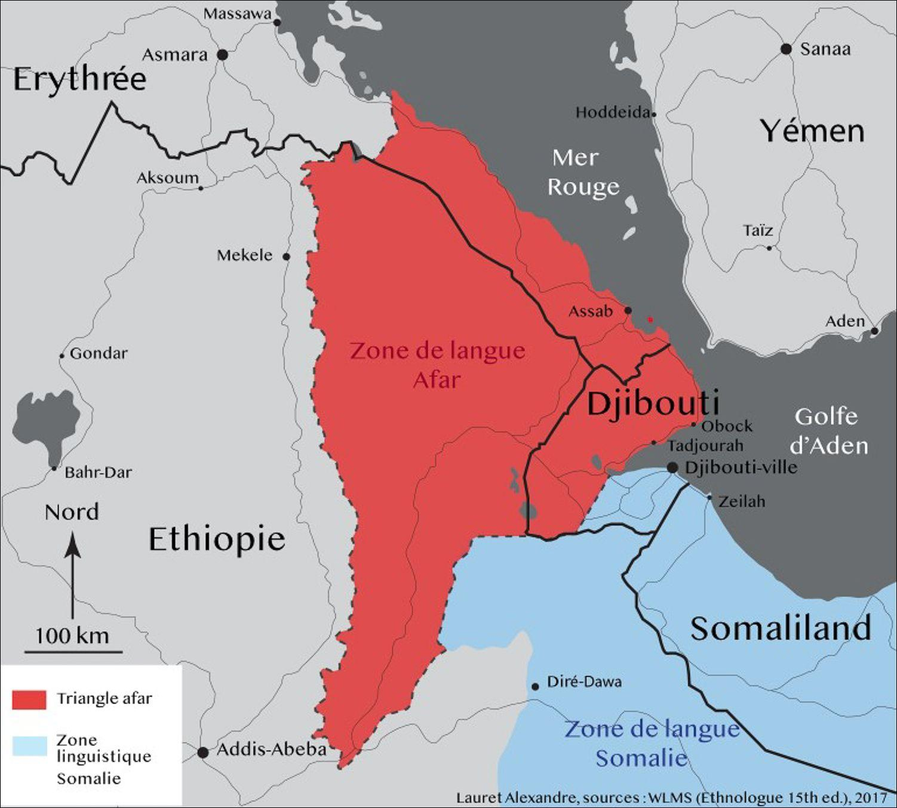
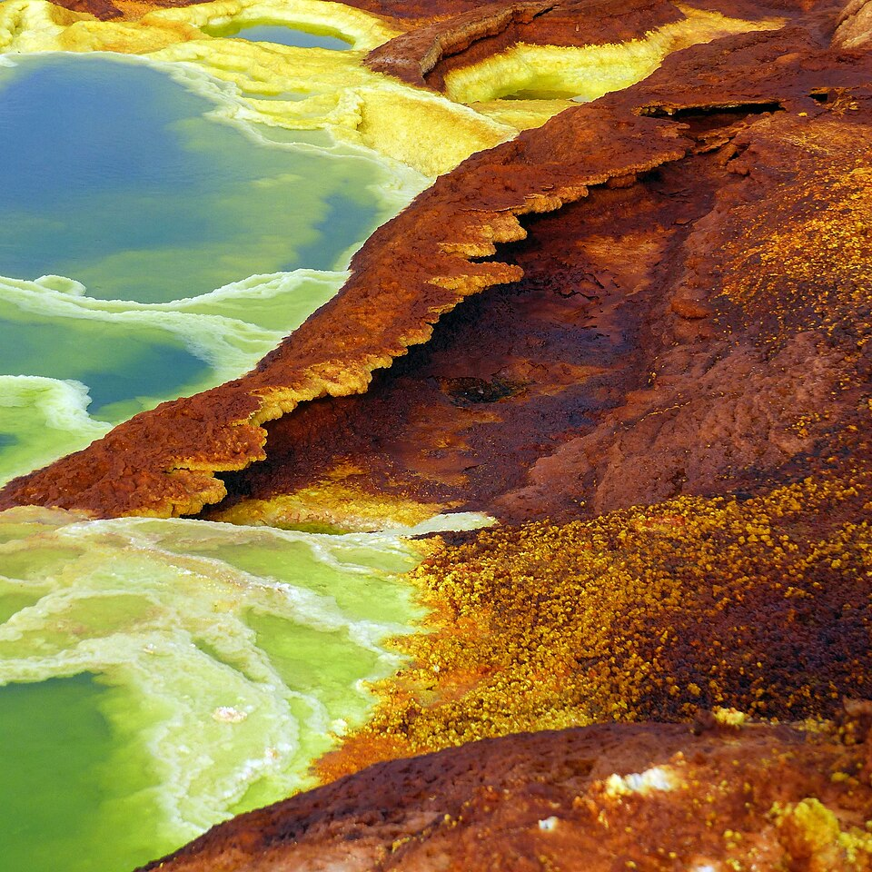
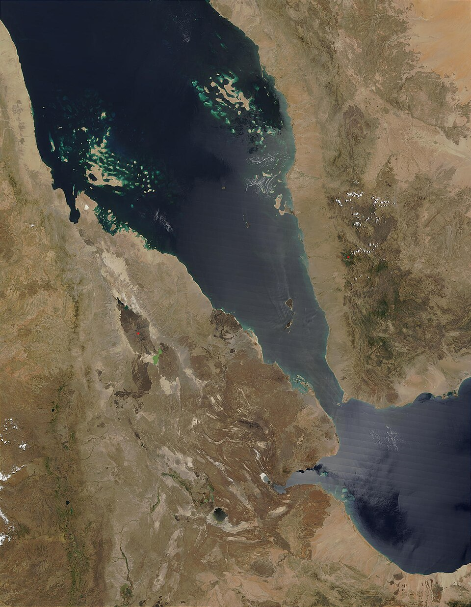
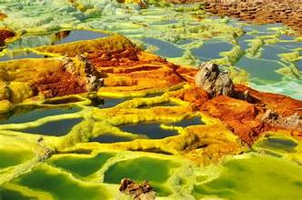
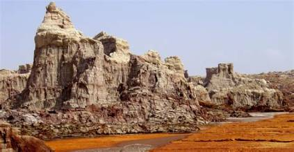
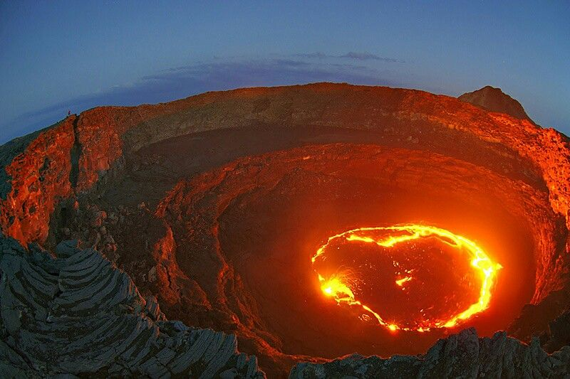
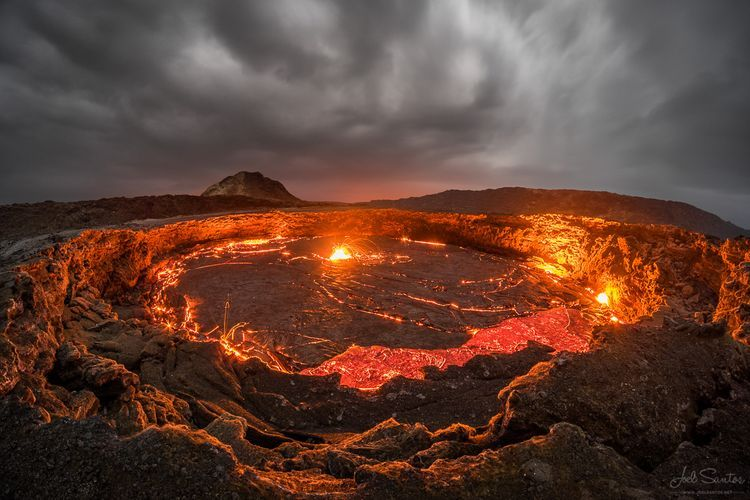
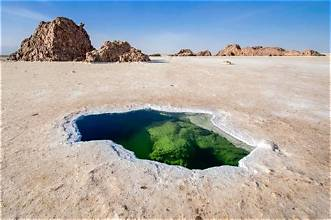
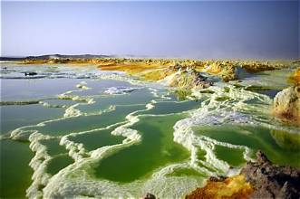
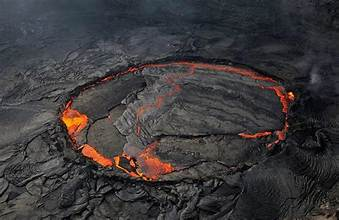

Le territoire afar
Un peuple, une terre, une histoire
1. Un territoire au cœur de la Corne de l’Afrique
Le territoire afar se situe au cœur de la Corne de l’Afrique, dans une région où se rencontrent les terres de l’Afrique orientale, la mer Rouge et le golfe d’Aden. Historiquement habité par le peuple afar, cet espace s’étend aujourd’hui sur trois pays : l’Éthiopie, l’Érythrée et Djibouti.
Bien que les frontières politiques aient séparé cet espace entre plusieurs États, les Afars partagent une langue, une histoire et des traditions qui témoignent de liens anciens entre les différentes parties de leur territoire. Leur présence est particulièrement associée aux régions arides, aux plaines désertiques et aux zones côtières de cette partie de l’Afrique.
Le territoire afar ne se limite donc pas à une région administrative : il renvoie également à un espace historique et culturel dont la compréhension nécessite de dépasser les frontières nationales actuelles.

2. Le Triangle afar
L’expression « Triangle afar » désigne un espace géographique associé à la présence du peuple afar dans cette partie de la Corne de l’Afrique. Elle évoque notamment les territoires afar d’Éthiopie, d’Érythrée et de Djibouti, dont les populations entretiennent des liens historiques et culturels.
Cette région occupe une position stratégique entre les hauts plateaux éthiopiens, la mer Rouge et le golfe d’Aden. Sa proximité avec les voies maritimes reliant l’Afrique à la péninsule Arabique a contribué à l’importance historique des échanges et des relations entre les populations de la région.
Les Afars sont également associés à un environnement côtier et maritime. Leurs liens historiques avec les zones littorales et les ports rappellent que leur histoire ne se résume pas aux espaces désertiques, mais s’inscrit aussi dans les échanges entre l’intérieur du continent africain et les régions bordant la mer Rouge.
Il convient toutefois de distinguer cet espace humain et historique du Triangle de l’Afar au sens géologique, qui désigne une région particulière où se rencontrent plusieurs grandes structures tectoniques.
3. La dépression de l’Afar : un phénomène géologique exceptionnel
Située dans la Corne de l’Afrique, principalement en Éthiopie et en Érythrée, la dépression de l’Afar est une vaste région caractérisée par des paysages volcaniques, des failles et des températures extrêmes. Son nom vient du peuple afar qui habite ce territoire. La partie nord de la dépression est également appelée dépression du Danakil.
Un carrefour entre trois plaques tectoniques
La dépression de l’Afar possède une particularité rare : elle constitue un point triple tectonique, où se rencontrent trois grands systèmes de rifts, c’est-à-dire des zones où la croûte terrestre s’étire et se fracture. Il s’agit du rift de la mer Rouge, de celui du golfe d’Aden et du rift est-africain. Ces formations sont liées aux mouvements des plaques arabique, somalienne et nubienne.
Depuis des millions d’années, ces mouvements provoquent l’amincissement et l’affaissement de la croûte terrestre. Ils expliquent la forme triangulaire de la dépression et font de l’Afar un lieu privilégié pour observer les mécanismes de la dérive des continents.
Une région façonnée par le volcanisme
L’histoire géologique de l’Afar remonte à plusieurs dizaines de millions d’années. Une remontée de matière chaude depuis le manteau terrestre a favorisé un volcanisme intense, notamment la formation d’épaisses couches de roches volcaniques, principalement des basaltes. Cette activité a contribué à fragiliser la croûte et à amorcer la séparation progressive des plaques.
Aujourd’hui encore, les phénomènes volcaniques et tectoniques restent actifs. La région compte plusieurs volcans remarquables, dont l’Erta Ale, connu pour son lac de lave, le Dallol, célèbre pour ses sources chaudes et ses formations minérales colorées, ainsi que l’Ardoukôba, dont l’éruption remonte à 1978. Les failles et les remontées de magma peuvent également provoquer des séismes.
La mer Rouge et les paysages de sel
La dépression du Danakil comprend des zones situées sous le niveau de la mer. À plusieurs reprises au cours de l’histoire géologique, les eaux de la mer Rouge ont envahi certaines parties de cette région. Les récifs coralliens fossiles et les épais dépôts de sel témoignent de ces anciennes incursions marines. Aujourd’hui, le sel reste une ressource importante dans certains secteurs de l’Afar.
Une fenêtre sur la formation des océans
L’Afar est l’un des rares endroits au monde où l’on peut observer à l’air libre des processus habituellement associés aux profondeurs océaniques. L’écartement des plaques rappelle les mécanismes qui participent à l’ouverture des océans. Toutefois, la croûte de l’Afar reste plus épaisse que celle d’un océan classique : les scientifiques la qualifient de croûte transitionnelle.
Cette région constitue donc un véritable laboratoire naturel pour comprendre l’évolution de la Terre, les mouvements des plaques tectoniques et les liens entre volcanisme, séismes et formation des océans.
Pour approfondir le sujet
Pour en savoir plus sur la géologie, l’histoire et les particularités de la dépression de l’Afar, consultez les ressources suivantes :









4. Les frontières actuelles et la continuité du peuple afar
La répartition du peuple afar entre l’Éthiopie, l’Érythrée et Djibouti s’inscrit dans une histoire politique marquée par la formation des États modernes et les frontières héritées de différentes périodes historiques.
Aujourd’hui, ces frontières déterminent des cadres administratifs distincts. En Éthiopie, la région administrative Afar est située au nord-est du pays et couvre environ 95 000 km². Son chef-lieu est Semera. Cette région constitue une partie du territoire afar, mais ne représente pas à elle seule l’ensemble de son aire historique et culturelle.
La distinction entre territoire historique, territoire culturel et territoire administratif est essentielle pour comprendre la situation des Afars. Elle permet de considérer à la fois la diversité des espaces dans lesquels ils vivent et les liens qui unissent leurs communautés au-delà des frontières.
5. Explorer le territoire afar
Pour découvrir les localités, les reliefs et les repères géographiques de cette région, consultez les cartes suivantes :
Pour aller plus loin
Pour approfondir l’histoire et la culture des Afars, consultez également cette ressource documentaire :